1、必须检查的重要部件
如果怀疑车身悬架已经损坏或变形，应当在车身校正装置上检查车辆的悬架，进行必要的校正；
检查转向装置和转向拉杆是否正常，目测检查是否发生变形及裂缝；
检查所有底盘部件；
检查车轮和轮胎是否损坏，检查同心度和平衡性：检查轮胎花纹和胎壁上是否有裂缝，并检查轮胎气压；
检查电驱动系统总成、电池、车桥是否损坏。在维修后应进行道路实车测试，以便确定车辆是否能安全行驶，安全性能是否符合标准。
如果车辆承受过巨大压力，必须检查以上部件，同时进行车辆定位检测。
2、测量
拆卸和切割作业前，应根据车身尺寸图进行测量，使用拉具桥正受损的车身或车架。
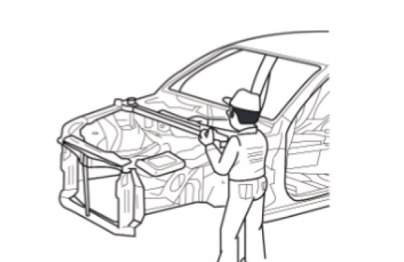
3、拆卸
切割部位
A- 允许切割部位
B- 弯曲部位
C- 加强件
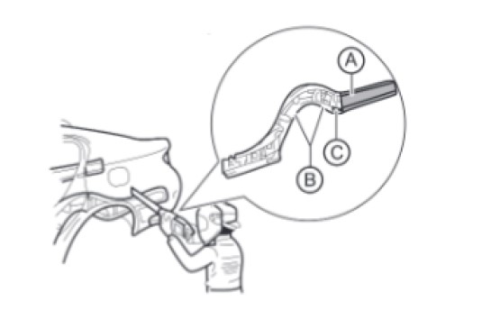
必须在直线部分进行切割，并避免切割加强件部分。
切割会影响车身的刚度，因此，必须根据维修手册相关规定进行可靠性和安全性处理。
禁止在线束安装位置区域进行钻或切割。在切割、钻孔前后应检查确保没有软管、电线受损。
拆卸相邻组件时，必须在车身周围和工具上粘贴保护胶带，避免部件受损。
4、安装准备
点焊事项：在一般情况下，当焊接的板件总厚度 a 超过 3mm 时，要使用 MIG 焊机进行塞焊。超过 3mm 的钢板厚度，点焊无法保证 连接耐久性；
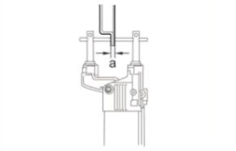
将需要焊接的新部件和车身漆膜去除，然后涂施点焊密封胶（或透焊底漆）；
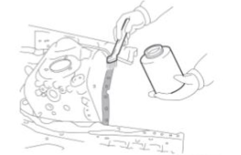
对无法进行点焊或过厚的部位，先使用打孔器或钻头打孔，再进行塞焊作业。
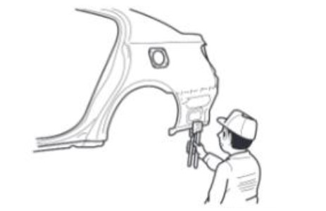
|
焊接部位厚度 |
塞焊孔尺寸（mm） |
|
不大于 1.6 |
Φ6 |
|
大于 1.6 |
Φ8 |
电子组件操作注意事项：
焊接时，电子组件有可能会被由焊机输送流经车身的电流损坏；
开始焊接前，需先断开蓄电池负极接线柱，并在车身焊接部位附近设置接地；
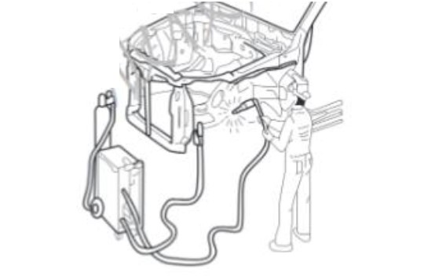
切割位置要求：使用维修工具 A：气动锯，切割部位宽度 a：20～30mm；
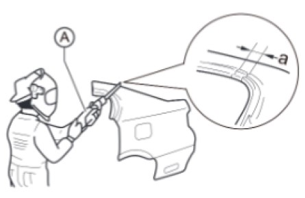
在接合区域对新零件进行粗切，a 部位必须预留 20～30mm 的重叠搭接区域。
5、安装
焊接前测量：
安装新部件前，必须依照车身尺寸图进行尺寸测量，以确保正确装配；
安装完成后确认装配是否适当。
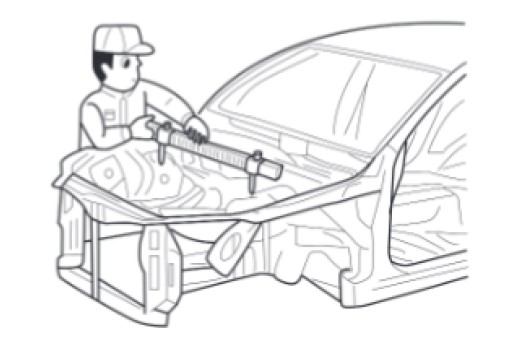
焊接注意事项：
点焊：一般为生产厂商原焊点数的 1.3 倍；
塞焊：一般多于生产厂商原焊点数；
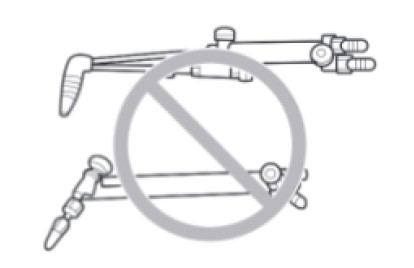
填焊作业应使用 MIG（金属惰性气体）焊机。不可对钢板规定部位以外的区域使用气焊或填焊。
焊接后的研磨工序注意事项：
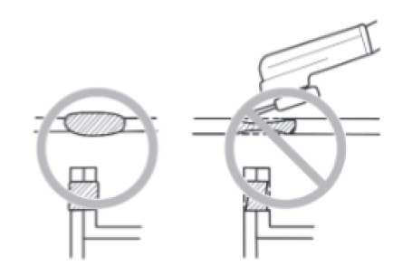
焊接后必须检查焊接部位，确保焊接牢固；
使用角磨机打磨焊接区域时，不可研磨过度，否则会降低焊接部位强度。
点焊位置：
A- 旧焊点位置
B- 新焊点位置
避免与旧焊点熔核区域重叠焊接。
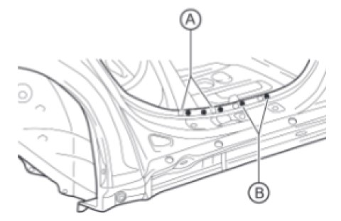